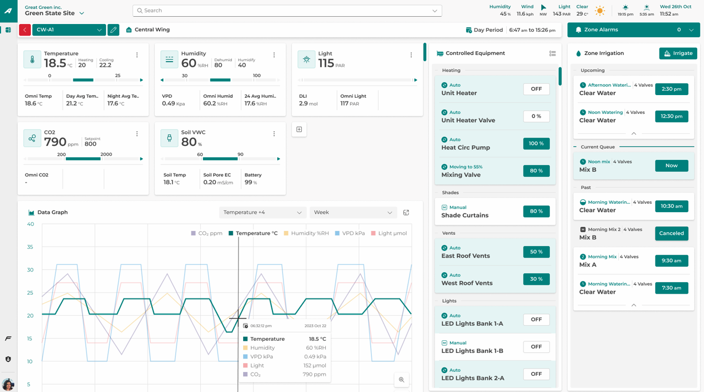

Overview
Controlled Environment Agriculture (CEA) — encompassing commercial greenhouses, vertical farms, and indoor growing facilities — generates a continuous stream of high-dimensional sensor data: temperature, humidity, vapor pressure deficit (VPD), CO₂, photosynthetically active radiation (PAR), and electrical conductivity (EC). Translating these data streams into timely, actionable agronomic decisions is a persistent challenge for everyday growers. This preliminary study examines the gap between existing commercial monitoring platforms and a proposed farmer-centric conversational AI interface.
"The primary limitation of prevailing tools is their steep learning curve and high cognitive load — they passively present complex data but require the user to manually interpret and formulate a mitigation strategy."
Background & Motivation
A survey of widely adopted CEA management platforms — including Priva, Argus Controls, and AgriERP — reveals a design paradigm heavily biased toward facility engineers rather than everyday farmers. These platforms predominantly rely on complex, dashboard-heavy UIs that display raw telemetry across dense technical charts, equipment schematics, and alarm logs.
For farmers with lower digital literacy, this interface design exacerbates the "expert blind spot": users are forced to fall back on personal heuristics rather than data-driven insights when troubleshooting rapid-onset issues like gray mold outbreaks. Prior HCI research corroborates this friction. Hertzum & Abdelnour-Nocera (2020) documented how professional greenhouse growers experience high cognitive load when using climate-management systems, finding that the systems' complexity often leads growers to develop informal coping strategies rather than engaging with the full analytical capabilities the tools nominally offer.
Community sentiment from commercial growing forums independently corroborates these academic findings, providing ecologically valid evidence of the friction points we aim to address.
Practitioner Voice: Evidence from the Field
To complement the academic literature, we surveyed practitioner discourse on r/macrogrowery, one of the most active online communities for commercial-scale growers. Two threads are particularly instructive.
In a thread titled "Best greenhouse climate control with phone capability", growers actively sought alternatives to enterprise-tier systems precisely because of UI complexity and cost barriers. The consensus that emerged was telling: Priva and Argus are widely acknowledged as the commercial-grade gold standard for reliability and sensor integration, but their software complexity and associated costs push many mid-scale operators to seek more accessible, modern alternatives. Growers in this thread were not questioning the hardware capability of these platforms — they were questioning whether they could realistically operate them without dedicated technical staff. This is a usability gap, not a feature gap.
"[Priva and Argus are] commercial grade… but the cost and the software complexity… I just need something I can actually use from my phone without a two-week training course."
A second thread on "Power Scheduling / Controls Discussion" captures the cognitive-load problem even more directly. The discussion centers on the difficulty of configuring power and equipment scheduling within systems like Argus — a task that, in principle, should be routine but in practice becomes a persistent source of operational failure. One comment distills the community's collective frustration with unusual precision:
"Controls is probably the #1 misunderstood, screwed up, overpaid, 'it never works right' part of a grow."
This quote is remarkable not for its bluntness but for what it reveals structurally: the problem is not that growers lack intelligence or motivation — it is that the interface between grower intent and system action is so poorly designed that even experienced practitioners consistently fail to operationalize the tools they have paid significant sums to acquire. This is a canonical HCI failure mode, and it maps directly onto the theoretical framework of Norman's gulf of execution: the gap between what a user wants to do and the actions the interface affords. Our proposed conversational AI interface is designed specifically to close this gulf.
Interface Comparison
The two screenshots below juxtapose the dominant commercial paradigm (Argus) against a proposed farmer-centric conversational AI interface (FarmAssist AI). The contrast reveals fundamentally different theories of how growers should interact with operational data.


Key Preliminary Findings
Our interface analysis and grower interviews surface four converging themes that motivate the design of a conversational AI alternative:
Existing platforms present data for inspection, not for decision-making. Growers must mentally translate raw sensor readings into intervention choices without scaffolding.
Alert systems in commercial tools are high-volume and low-priority-ranked, producing alert fatigue that causes growers to habitually dismiss notifications — including critical ones.
The absence of localized, crop-specific context forces growers to consult external agronomists or rely on trial-and-error, introducing delays during time-sensitive disease events.
Conversational prompts ("What should I do right now?") dramatically lower the threshold for engagement and surface decision-support in the vocabulary growers actually use.
Proposed Design Direction
The FarmAssist AI prototype (Figure 1b) addresses each of these failure modes through three design principles. First, actionable framing: rather than displaying raw VPD values, the interface surfaces a prioritized action queue with time-to-impact estimates. Second, confidence communication: recommendations are annotated with model confidence scores and the data sources underpinning each suggestion, supporting grower trust calibration. Third, progressive disclosure: technical parameters (TEA-cost modeling, LCA impact) are accessible on demand but hidden by default, preserving interface legibility for non-specialist users.
This design draws on life-cycle assessment (LCA) data and Trichoderma efficacy modeling from the agronomic literature, grounding AI-generated recommendations in domain-validated evidence rather than generic heuristics. The interface also incorporates a cost-estimate mechanism, allowing growers to evaluate trade-offs between immediate intervention costs and projected crop loss, directly addressing the economic decision-making bottleneck identified in grower interviews.
Related Work
Hertzum & Abdelnour-Nocera's longitudinal study is the most directly relevant HCI work to our design problem. Using contextual inquiry and diary studies across commercial greenhouse operations, the authors documented how climate-management system complexity creates systematic workarounds among professional growers — including informal knowledge-sharing networks that substitute for the analytical functions the software nominally provides. The paper establishes empirical groundwork for the cognitive-load argument underpinning our proposed intervention.
While not peer-reviewed, these community threads represent unmediated practitioner voices — a population notoriously difficult to reach through academic survey instruments. Their convergence with Hertzum & Abdelnour-Nocera's findings strengthens the ecological validity of our design problem statement. Crowdsourced practitioner sentiment has been used productively in prior HCI work as a form of naturalistic need-finding (Bruckman, 2006; Lazar et al., 2017).
Next Steps
This preliminary work motivates a structured comparative study. We plan to recruit commercial CEA growers across Virginia and North Carolina for a within-subjects usability evaluation comparing the Argus platform with the FarmAssist AI prototype on ecologically valid tasks — including gray mold diagnosis, irrigation adjustment, and nutrient scheduling under time pressure. Primary measures will include task completion time, error rate, NASA-TLX cognitive load scores, and grower confidence ratings. Findings will directly inform the iterative design of the conversational interface and contribute to the broader HCI literature on AI-mediated decision support in high-stakes agricultural contexts.